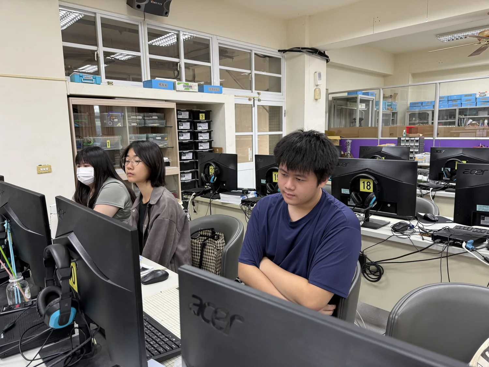

12 / ROADMAP從可展示原型
從可展示原型
走向可靠服務
下一階段的重點不是加入更多畫面，而是建立可驗證、可更新、能回應真實場域風險的系統。
EVIDENCE
建立標準題集與專家審查
把常見作物問題整理為測試題，明確標註可接受答案、引用來源與危險錯誤。
VISION
接入真實影像模型
用不同光線、角度與病程的田間照片測試，記錄誤判及不確定案例。
SENSORS
串接農場感測資料
讓溫度、濕度、EC 與 pH 趨勢由展示資料變成可追溯的現場紀錄。
GOVERNANCE
建立知識更新機制
定期確認手冊版本、補充新作物，並保留每次內容異動與審核紀錄。

HUMAN + AI COLLABORATION
AI 加快開發，人仍負責判斷
學生主導需求整理、資料選擇、內容查核與實際測試；AI 協助程式雛形、觀念理解與除錯；教師協助檢視方向和成果。
這段研發歷程最大的收穫，是學會把「模型可以做什麼」轉成「使用者真正需要什麼」，再用資料與測試確認兩者之間的距離。
CONCLUSION
讓知識容易找到，
也讓答案經得起查核。
智慧植栽專家系統已完成手機端 RAG 問答原型。下一步將以正式驗證、影像辨識與真實農場資料為核心，逐步提升實際應用的可靠性。
回到封面 ↗